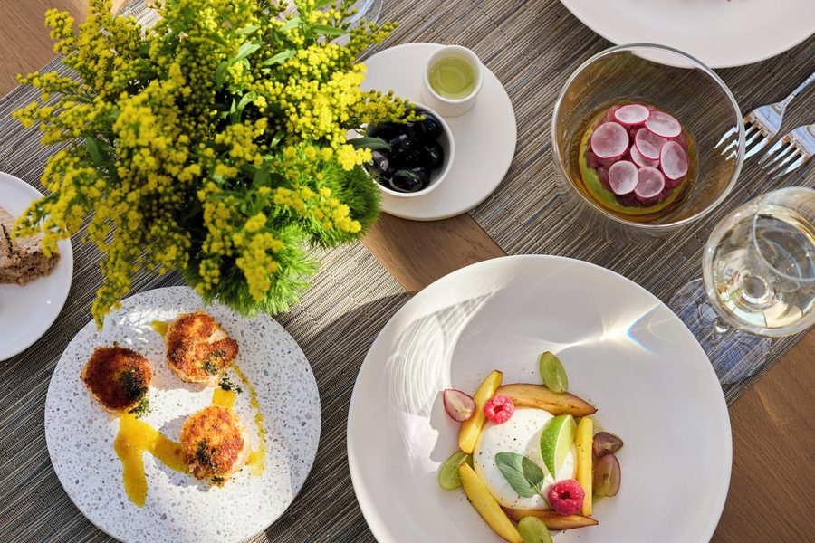

Nº 01 · Juni MMXXVI
12 bronnen
Ikos Porto Petro
Mallorca
Claire & Michiel
Una semana entre dos bahías
Scroll
Een zonnige Mediterrane week op Mallorca's zuidkust — lange dagen, zachte avonden, glinsterend turkoois water tussen twee baaien.
"Onder de pijnbomen, tussen twee baaien — seis días, dos personas, sin prisa."


